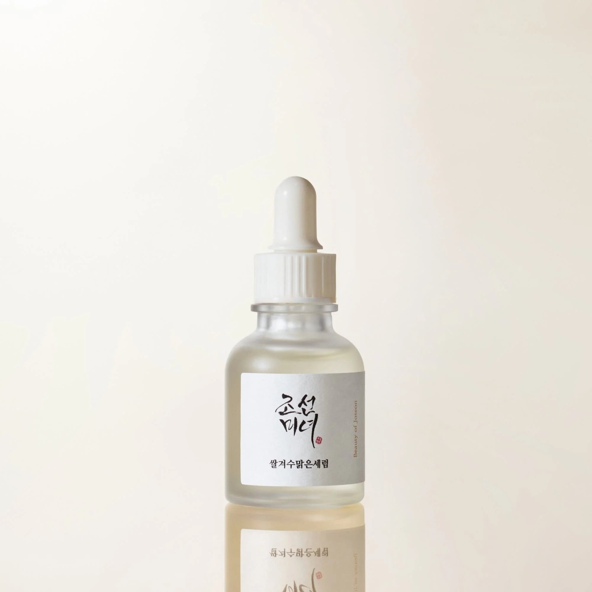
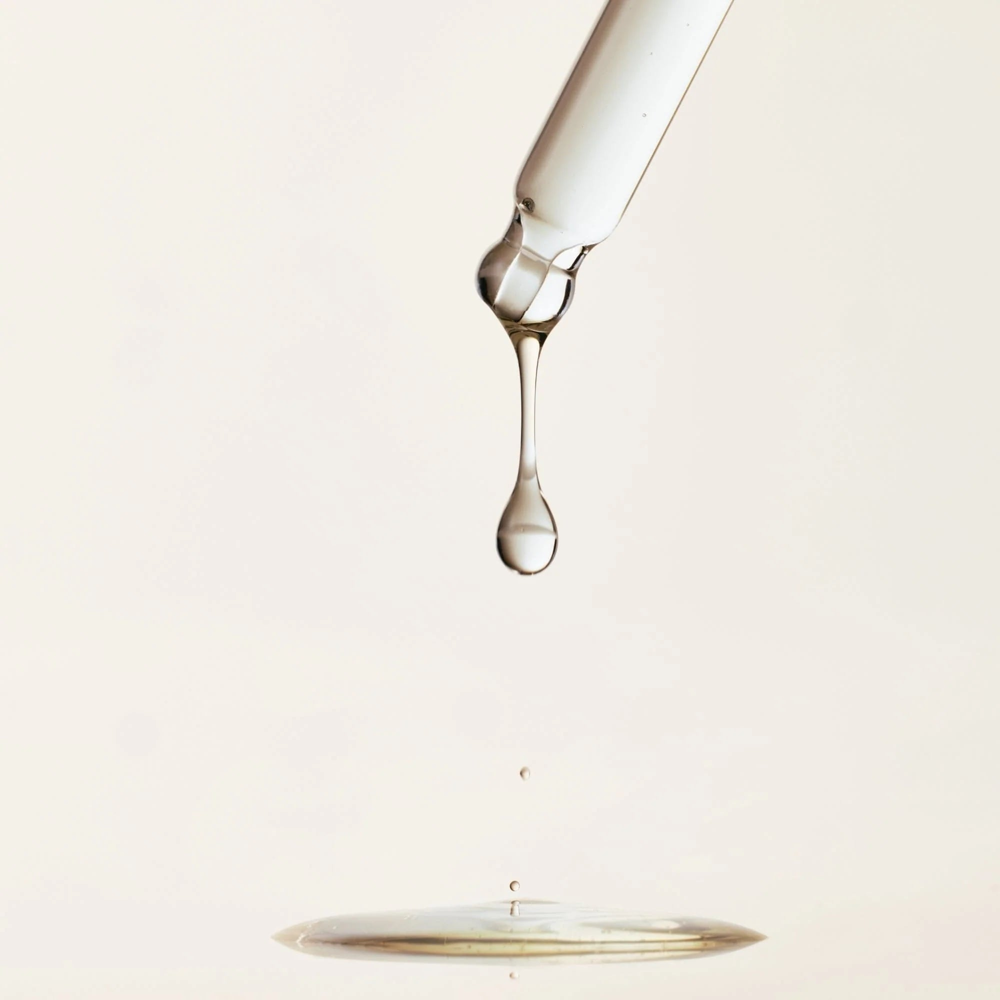
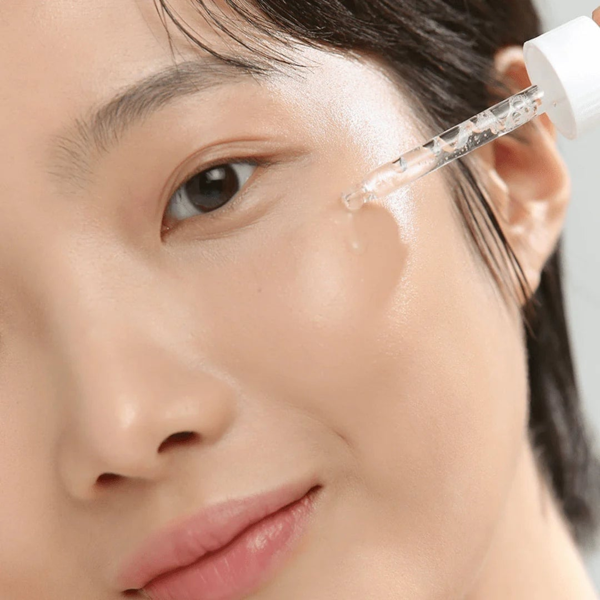
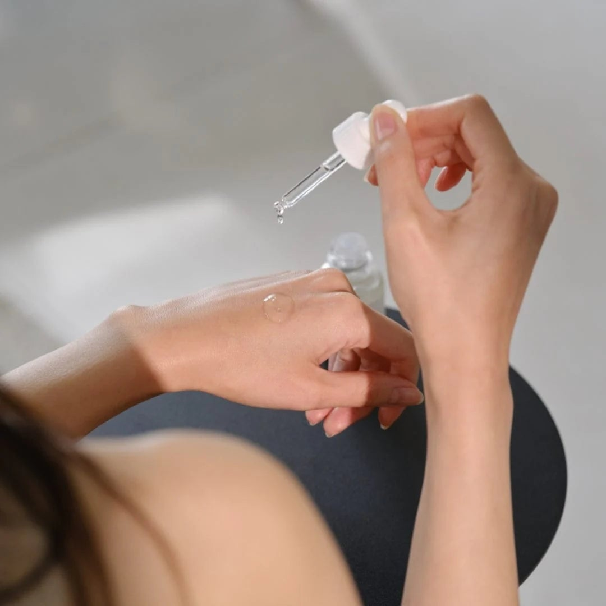

<div> <table style="border-collapse: collapse; width: 99.9574%;" border="1"><colgroup><col style="width: 50%;"><col style="width: 50%;"></colgroup> <tbody> <tr> <td> <div><span style="font-size: 14pt;"><strong>Beauty of Joseon Ser facial cu orez si alfa arbutina</strong></span></div> <div><span style="font-size: 14pt;"><strong>30ml</strong></span></div> <div><span style="font-size: 14pt;">Descopera serul Glow Deep de la Beauty of Joseon, o formula delicata prezentata intr-un flacon minimalist cu pipeta. Conceput pentru a imbunatati aspectul general al tenului, acest ser ofera o ingrijire tintita si o aplicare igienica, fiind ideal pentru obtinerea unui ten hidratat si cu aspect uniform.</span></div> </td> <td></td> </tr> <tr> <td></td> <td><span style="font-size: 14pt;">Textura fluida si extrem de lejera a serului Glow Deep se absoarbe rapid in piele, fara sa lase o senzatie incarcata. Fiecare picatura este creata pentru a infuza tenul cu o hidratare optima, lasand suprafata pielii neteda, catifelata si perfect pregatita pentru restul rutinei.</span></td> </tr> <tr> <td><span style="font-size: 14pt;">O aplicare fina si precisa pentru un plus de luminozitate naturala. Pipeta practica permite dozarea ideala direct pe ten, oferind o experienta de utilizare confortabila si curata. Serul ofera o senzatie imediata de prospetime, lasand pielea hidratata, revigorata si vizibil ingrijita in fiecare zi.</span></td> <td></td> </tr> <tr> <td></td> <td><span style="font-size: 14pt;">Consistenta apoasa si matasoasa a serului asigura o distributie uniforma pe piele. Este suficienta o cantitate mica pentru a acoperi delicat tenul sau mainile, oferind o hidratare profunda si un confort de lunga durata. Alegerea excelenta pentru integrarea ingredientelor traditionale coreene in ingrijirea zilnica.</span></td> </tr> </tbody> </table> </div>